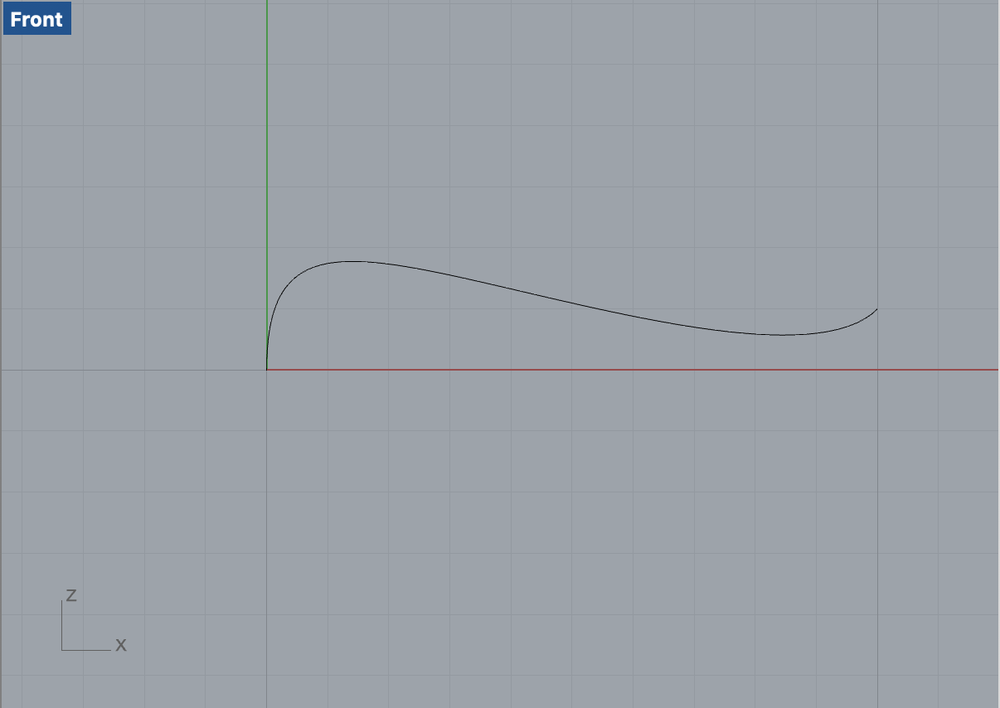
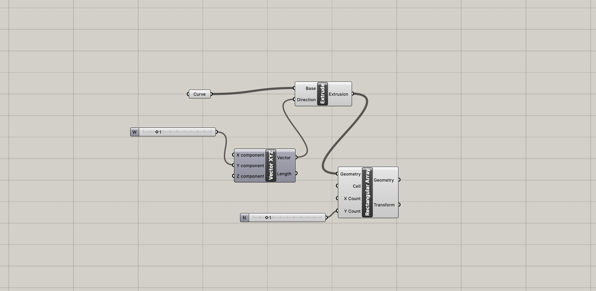
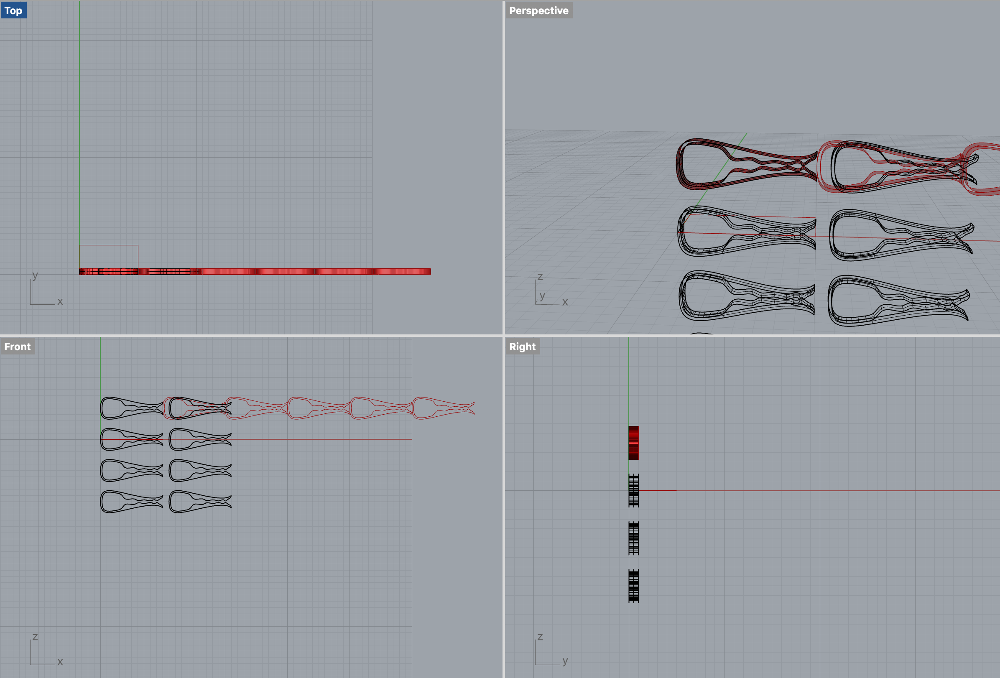
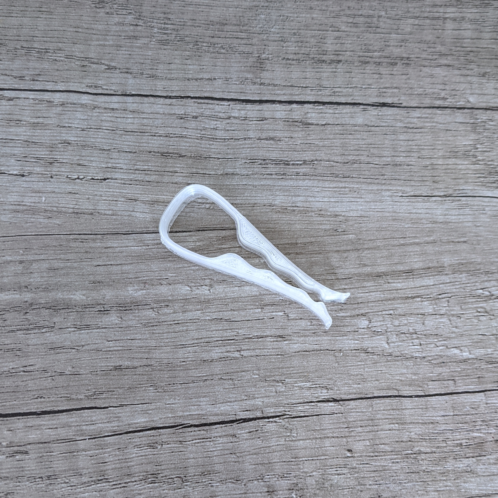
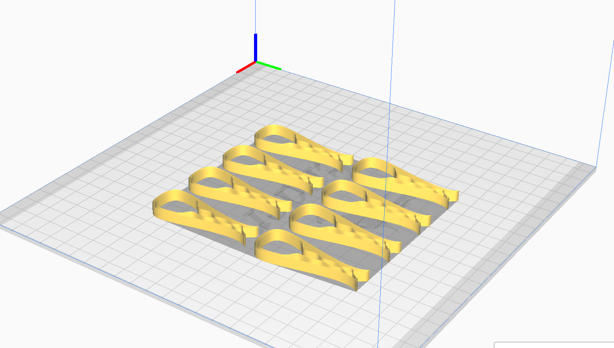
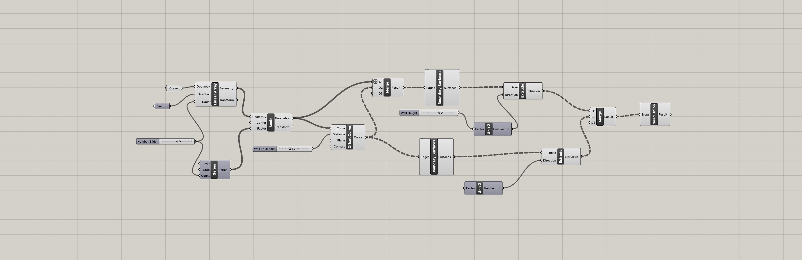
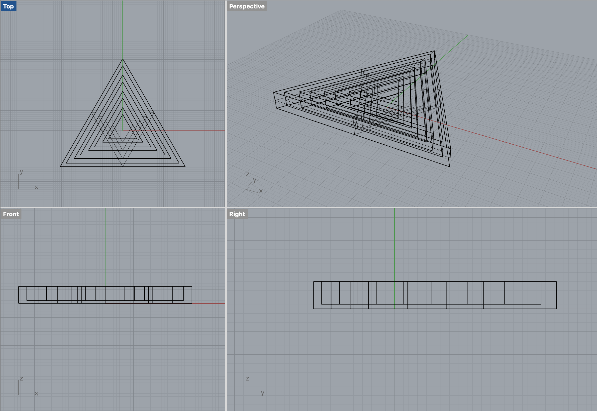

Source
This link
contains STL, Rhino, Grasshoper definition, G-code files of the clips and nested triangle that I am presenting here.
Documentation
Tools: Rhino, Cura, Grasshopper, & Ender 3 Pro
Clips
Draw Curves, Use offset and Mirror function on Rhino

Create a grasshopper definition of a clip and 3D print the clip

Bake the result

Print

Test
Print +8 pieces to have 10 good clips

Nested Triangles
1. Create a grasshopper definition that creates nesting structures
Credit to Jasper Tran O'Leary

2. Bake the result

3. Print